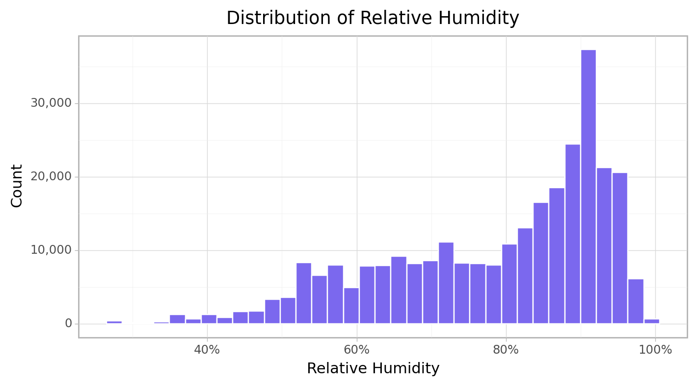

import pandas as pd
import numpy as np
import matplotlib.pyplot as plt
import matplotlib.ticker as mticker
import seaborn as sns
from plotnine import *Data & Exploration
Introduction
A PM2.5 sensor measures the level of fine particulate matter (pm2.5) within of a specific area by detecting the air quality, these sensors can be prone to faults due to so many reasons which can affect the quality of its signal and data. It is important to quickly detect when such device is faulty so repairs or replacement can be carried out. NOTE: PM2.5 also called Fine particulate matter are tiny particles in the air that reduce visibility and cause the air to appear hazy when levels are elevated. (PM2.5 are complex because they can be made up of numerous types of chemicals and particles and they can also be partly liquid. measured in micrograms per cubic meter. “a microgram is a unit of weight, there are a million micrograms in a gram & a pound = 450 grams.”
In order to effectively detect any future defects, we will train a model that can differentiate between a working sensor and an distorted sensor. Given the avaliable sensor historical data and the avaliability of the sensor fault label (Whether the sensor has a fault or not), The approprate model to use will be a supervised classification model.
Libraries
Custom Functions
import function as cfunAll custom functions used for the analysis can be found here
Data
train = pd.read_csv('data/train.csv', parse_dates = ['Datetime'])Variable Definition
Sensor1_PM2.5, Sensor2_PM2.5:: These are recorded PM2.5 from Sensor 1 and Sensor 2.
Temparature :: This is the degree or indensity of heat present when each PM2.5 was recorded using a Celsius scale. Note that higher tempemperature leads to low air quality. Also When the weather is hot primary sources of pollutants tend to increase.
Relative_Humidity :: Relative humidity is the amount of water vapor in the air, expressed as a percentage of the maximum amount of water vapor the air can hold at the same temperature. A high humidity increases the rate of harmful or toxic chemicals in the air.
Data Inspection
Data Info
train.info()<class 'pandas.core.frame.DataFrame'>
RangeIndex: 297177 entries, 0 to 297176
Data columns (total 7 columns):
# Column Non-Null Count Dtype
--- ------ -------------- -----
0 ID 297177 non-null object
1 Datetime 297177 non-null datetime64[ns]
2 Sensor1_PM2.5 293563 non-null float64
3 Sensor2_PM2.5 293563 non-null float64
4 Temperature 293628 non-null float64
5 Relative_Humidity 293628 non-null float64
6 Offset_fault 297177 non-null int64
dtypes: datetime64[ns](1), float64(4), int64(1), object(1)
memory usage: 15.9+ MBThere are 297,177 records and 7 variables of airquality data in the training data set, also the non null count shows that tamperature, relative humidity and both sensors have missing values in them.
Missing Values
na_df = train.isnull().sum().to_frame().rename(columns = {0: "Number of Missing Value"})
na_df["percentage"] = round((na_df["Number of Missing Value"] / train.shape[0])*100, 3)
na_df| Number of Missing Value | percentage | |
|---|---|---|
| ID | 0 | 0.000 |
| Datetime | 0 | 0.000 |
| Sensor1_PM2.5 | 3614 | 1.216 |
| Sensor2_PM2.5 | 3614 | 1.216 |
| Temperature | 3549 | 1.194 |
| Relative_Humidity | 3549 | 1.194 |
| Offset_fault | 0 | 0.000 |
Both PM2.5 sensor have 3,614 missing values which is 1.2% of the train data set, while both tempaerature and relative humidity have 3,549 (1.2%) of missing data.
Question:
There are similar missing number of values for both sensors and also temperature and relative humidity, so are these missing records similar in the data.
def related_missing_record(df, cols):
check_1 = df.loc[df[cols[0]].isna()].loc[df[cols[1]].notna()].shape[0]
check_2 = df.loc[df[cols[1]].isna()].loc[df[cols[0]].notna()].shape[0]
return check_1 == check_2
print(f"Both Sensor ::\n{related_missing_record(train, ['Sensor1_PM2.5', 'Sensor2_PM2.5'])}\n")
print(f"Train Temperature & Relative Humidity::\n{related_missing_record(train, ['Temperature', 'Relative_Humidity'])}\n")Both Sensor ::
True
Train Temperature & Relative Humidity::
True
Looks like there were reasons/faliure for skipping data entry during a specific period of time for both sensors. let get the minimum and maximum date for this missing record.
for col in ["Sensor1_PM2.5", "Temperature"]:
print(f"{col} ::\n{train.loc[train[col].isna()]['Datetime'].agg(['min', 'max'])}\n")Sensor1_PM2.5 ::
min 2021-10-18 10:00:13
max 2021-10-22 14:58:43
Name: Datetime, dtype: datetime64[ns]
Temperature ::
min 2021-10-30 11:00:31
max 2022-01-19 14:59:34
Name: Datetime, dtype: datetime64[ns]
Outliers
sns.set_style("whitegrid")
fig, axes = plt.subplots(nrows = 2, ncols = 2, figsize = (10, 6))
fig.suptitle('Variable Distribution', y = 0.93, fontsize = 16)
for ax, data, name in zip(axes.flatten(), train, ['Sensor1_PM2.5', 'Sensor2_PM2.5', 'Temperature', 'Relative_Humidity']):
sns.boxplot(train[name], ax = ax)
ax.set_xlabel(name)outlier_cols = ["Sensor1_PM2.5", "Sensor2_PM2.5", "Relative_Humidity"]
for col in outlier_cols:
print(f"{col} Outlier :: {cfun.get_outlier(train, col, 1.5)}")
print("-"*20)Sensor1_PM2.5 Outlier :: [-18.055, 89.905]
--------------------
Sensor2_PM2.5 Outlier :: [-22.555000000000003, 89.64500000000001]
--------------------
Relative_Humidity Outlier :: [33.5, 125.5]
--------------------Both Sensors have some extrem large values that shows that there where some times when the sensors picked up dengerous level of Fine particulate matter around the area.
Question:
Are these extreme values somehow related to the periods when the pm2.5 sensors where condsidered faulty.
for col in ["Sensor1_PM2.5", "Sensor2_PM2.5"]:
print(f"{col} Outlier :: {cfun.get_outlier(train.query('Offset_fault == 0'), col, 1.5, typ='upper')}\n")
print(f"Max {col} value :: {train.query('Offset_fault == 0')[col].max()}\n\n")Sensor1_PM2.5 Outlier :: 92.72
Max Sensor1_PM2.5 value :: 997.96
Sensor2_PM2.5 Outlier :: 92.025
Max Sensor2_PM2.5 value :: 997.26
for col in ["Sensor1_PM2.5", "Sensor2_PM2.5"]:
print(f"{col} Outlier :: {cfun.get_outlier(train.query('Offset_fault == 1'), col, 1.5, typ='upper')}\n")
print(f"Max {col} value :: {train.query('Offset_fault == 1')[col].max()}\n\n")Sensor1_PM2.5 Outlier :: 81.525
Max Sensor1_PM2.5 value :: 283.18
Sensor2_PM2.5 Outlier :: 71.0
Max Sensor2_PM2.5 value :: 248.4
Both occations show that the extreme values are present inspite of whether the sensor is considered faulty or not.
for col in outlier_cols:
print(f"Number of Outlier in {col} is {cfun.filter_outlier(train, col, 'inner').shape[0]:,}")
print("-"*46)Number of Outlier in Sensor1_PM2.5 is 17,402
----------------------------------------------Number of Outlier in Sensor2_PM2.5 is 15,463
----------------------------------------------Number of Outlier in Relative_Humidity is 772
----------------------------------------------Data Cleaning
The train data will be restructured for exploration.
e_train = train.dropna().copy()
e_train.shape(290014, 7)Exploratory Data Analysis
Additional Variables
The sensors PM2.5 records are numeric, a categorical variable will be created to distinguish this records for better data exploration.
e_train = cfun.add_pmCategory(e_train, ordinal=False)
for col in ["S1_AQI", "S2_AQI"]:
e_train[col] = e_train[col].astype("category")
e_train[col] = e_train[col].cat.reorder_categories(["Good", "Moderate", "Unhealthy (SG)", "Unhealthy", "Very Unhealthy", "Hazardous"], ordered = True)Defining Air Quality Index Categories:
1. Good :: Little to no risk (PM2.5 from 0 - 12.0).
2. Moderate :: Unusually sensitive individuals may experience respiratory symptoms. (PM2.5 from 21.1 - 35.4).
3. Unhealthy (for sensitive groups) :: Increasing likelihood of respiratory symptoms in sensitive individuals. (PM2.5 from 35.5 - 55.4).
4. Unhealthy :: Increased respiratory effect in general population. (PM2.5 from 55.5 - 150.4).
5. Very Unhealthy :: Significant increase in respiratory effect in general population. (PM2.5 from 150.4 - 250.4).
6. Hazardous :: Serious risk of respiratory effect in general population (PM2.5 from 250.4 - 500.4).
source: U.S Environmental Protection Agency
The Datetime contains the timestamp of the data collection, from this variable the individual hour, month, and year will be extracted.
e_train = cfun.get_standAlone_dates(e_train, "Datetime", ["hour", "month", "year"])Changing offset fault for better readability during exploration.
e_train["faulty"] = e_train["Offset_fault"].replace({0: "No", 1: "Yes"})
e_train.head(3)| ID | Datetime | Sensor1_PM2.5 | Sensor2_PM2.5 | Temperature | Relative_Humidity | Offset_fault | S1_AQI | S2_AQI | Hour | Month | Year | faulty | |
|---|---|---|---|---|---|---|---|---|---|---|---|---|---|
| 0 | ID_QF0ZTQJ2SF5Q | 2021-11-03 04:06:31 | 52.58 | 49.52 | 17.4 | 96.0 | 0 | Unhealthy (SG) | Unhealthy (SG) | 4 | 11 | 2021 | No |
| 1 | ID_4GTK689CNX5S | 2021-11-08 18:43:23 | 35.25 | 33.40 | 25.0 | 75.0 | 0 | Moderate | Moderate | 18 | 11 | 2021 | No |
| 2 | ID_DL7VVKW9U7XQ | 2021-11-07 09:50:33 | 19.18 | 23.50 | 24.9 | 75.0 | 0 | Moderate | Moderate | 9 | 11 | 2021 | No |
Univariate Analysis
cfun.rec_count(e_train, "faulty", title = "Device Status", typ = "plt")<ggplot: (103465133075)>The outcome variable offset fault contains only two categories which are 1/Yes for PM2.5 sensor that was considered to have been sending faulty signals at the time and 0/No for sensors working well. From the bar chart above, there are less faulty sensors (36.95%) that faulty sensors (63.05%) overall.
e_train.select_dtypes("number").describe().applymap(lambda x: round(x, 3))| Sensor1_PM2.5 | Sensor2_PM2.5 | Temperature | Relative_Humidity | Offset_fault | Hour | Month | Year | |
|---|---|---|---|---|---|---|---|---|
| count | 290014.000 | 290014.000 | 290014.000 | 290014.000 | 290014.000 | 290014.000 | 290014.000 | 290014.000 |
| mean | 40.902 | 38.319 | 23.323 | 78.614 | 0.369 | 11.350 | 9.082 | 2021.208 |
| std | 28.598 | 28.723 | 3.842 | 14.792 | 0.483 | 6.969 | 4.195 | 0.406 |
| min | -9.450 | -9.700 | 16.700 | 27.000 | 0.000 | 0.000 | 1.000 | 2021.000 |
| 25% | 22.570 | 19.620 | 20.400 | 68.000 | 0.000 | 5.000 | 10.000 | 2021.000 |
| 50% | 36.650 | 33.850 | 21.900 | 84.000 | 0.000 | 11.000 | 11.000 | 2021.000 |
| 75% | 49.550 | 47.700 | 26.300 | 91.000 | 1.000 | 17.000 | 12.000 | 2021.000 |
| max | 997.960 | 997.260 | 34.900 | 99.000 | 1.000 | 23.000 | 12.000 | 2022.000 |
In micrograms per cubic meter the minimum value for sensors 1 and 2 falls within the range -9.45 to -9.70 respectively while that maximum value falls within the range 997.96 to 997.26 respectively which shows only a very small difference, for the average value given that there are huge presence of outliers in both sensors it will be more accurate to look at the median value where 50% for sensor 1 fall between 36.65 and lower also for sensor 2 33.85 and lower.
There was an average temperature of 23.32 degrees overall for the train set and for relative humidity 78.61.
Sensor PM2.5 Distribution
cfun.histPlot(e_train, "Sensor1_PM2.5", bins = 100, title=f"Sensor 1 PM2.5")<ggplot: (103462325792)>cfun.histPlot(e_train, "Sensor2_PM2.5", bins = 100, title=f"Sensor 2 PM2.5")<ggplot: (103469997618)>Air Quality Index
cfun.air_quality_count(e_train, "S1_AQI")<ggplot: (103474331354)>cfun.air_quality_count(e_train, "S2_AQI")<ggplot: (103467692831)>Sensor 2 Picked up more Good PM2.5 signals (11.87%) than sensor 1 (8.51%), both sensors have just 0.03% of it recodes as hazadious while the highest Air quality index category recorded was moderate level with 39% and 41% respectively for sensor 1 and 2.
Temperature
print(cfun.boxPlot(e_train, "Temperature"))
print(cfun.histPlot(e_train, "Temperature", bins=35))Given that the distibution is skewed, it shows that there are more low temperatures recorded then high temperatures.
Relative Humidity
print(cfun.boxPlot(e_train, "Relative_Humidity", axis_text_suffix="%"))
print(cfun.histPlot(e_train, "Relative_Humidity", bins=35, axis_text_suffix="%"))
More high relative humidity was recorded than low relative humidity Over the selected period.
DateTime
e_train["Datetime"].describe()count 290014
unique 286694
top 2021-11-05 12:40:33
freq 3
first 2021-10-15 16:00:31
last 2022-01-21 07:34:57
Name: Datetime, dtype: objectFor the train data set the we can see that the records started from the 15th of October 2021 up to the 21st of january 2022.
Month
e_train["Month"].unique()array([11, 1, 12, 10], dtype=int64)cfun.rec_count(e_train, "Month", rename_axis_text = ["January", "October", "November", "December"])<ggplot: (103466907288)>Year
cfun.rec_count(e_train, "Year")<ggplot: (103469877957)>Multivarite Analysis
Device Status and Particulate Matter
cfun.boxPlot(e_train, num_var="Sensor1_PM2.5", cat_var="faulty",
color=["#03B4C8", "#EE6A50"],
title=[f"particulate matter 2.5 From Sensor 1", "Device Status"])<ggplot: (103473763097)>cfun.boxPlot(e_train, num_var="Sensor2_PM2.5", cat_var="faulty",
color=["#03B4C8", "#EE6A50"],
title=[f"particulate matter 2.5 From Sensor 2", "Device Status"])<ggplot: (103467692042)>For both sensors there are many extreme PM2.5 values recorded when no faulty signals was detected than when it was.
sen_agg = cfun.vars_longer_summary(e_train,
select_vars = ["faulty", "Sensor1_PM2.5", "Sensor2_PM2.5"],
var_name = "Sensor", value_name = "PM 2.5",
replace_rec = ["Sensor 1", "Sensor 2"])
summary_fun = ["median", "max"]
plt_title = ["Median", "Maximum"]
for sumy_fun, plt_tl in zip(summary_fun, plt_title):
print(cfun.facet_summary_plot2(df = sen_agg, cat_var = "faulty", num_var = sumy_fun,
fill = "faulty", facet_by = "Sensor",
ylab = "PM2.5",
title = f"{plt_tl} Particulate Matter By Offset Fault For Each Sensor"))The Median PM2.5 for sensor 2 when no signal offset fault was detected (61.93%) is higher than that of sensor 1 (55.31%) and the reverse is the case when a fault was detected. in conclusion sensor 1 had more offset faults than sensor 2.
Temperature, Relative Humidity and Device status
tr_agg = cfun.vars_longer_summary(e_train,
select_vars = ["faulty", "Temperature", "Relative_Humidity"],
var_name = "variable", value_name = "value")
cfun.facet_summary_plot2(
df=tr_agg, cat_var="faulty", num_var="median",
fill="faulty", facet_by="variable", scales="free_y",
sb_aj=0.1, title="Median Of Temperature & Relative Humidity By Device Status") <ggplot: (103460835782)>Air Quality with Temperature & Relative Humidity
aqi_tr = cfun.vars_longer_summary(e_train,
select_vars=["S1_AQI", "Temperature", "Relative_Humidity"],
var_name ="Variable",
value_name ="PM2.5")
cfun.facet_summary_plot(
aqi_tr, "S1_AQI", "mean", "Variable",
sb_aj=0.06,
title="Average Relative Humidity & Temperature For Sensor 1 By Air Quality Index")<ggplot: (103469961883)>aqi_tr = cfun.vars_longer_summary(e_train,
select_vars=["S2_AQI", "Temperature", "Relative_Humidity"],
var_name ="Variable",
value_name ="PM2.5")
cfun.facet_summary_plot(
aqi_tr, "S2_AQI", "mean", "Variable",
sb_aj=0.06,
title="Average Relative Humidity & Temperature For Sensor 2 By Air Quality Index"
) <ggplot: (103347821319)>For relative humidity using the above chart the higher the critical level of PM2.5 the higher the relative humidity on an average with the exception of hazardous level. while for temperature the higher the critical level of PM2.5 the lower the degree of temperature on an average with only the exception of hazardous level.
Correlation
plt.figure(figsize = (20, 6))
num_cols = ['Sensor1_PM2.5', 'Sensor2_PM2.5', 'Temperature', 'Relative_Humidity']
sns.pairplot(e_train[num_cols],
kind="scatter",
plot_kws=dict(s=80, edgecolor="white", linewidth=2.5, color="#02A9EA"))
plt.show()<Figure size 1920x576 with 0 Axes># Ordinal Encoding
corr_df = e_train.copy()
for col in ["S1_AQI", "S2_AQI"]:
corr_df[col] = corr_df[col].replace({"Hazardous" : 0,
"Very Unhealthy": 1,
"Unhealthy" : 2,
"Unhealthy (SG)": 3,
"Moderate" : 4,
"Good" : 5})
corr_df[col] = corr_df[col].astype("int64")
cor = corr_df.select_dtypes(["int64", "float64"]).corr()
plt.figure(figsize = (10, 8))
sns.heatmap(cor, cmap = 'RdYlBu', annot = True, center = 0)
plt.title('Correlogram', fontsize = 15, color = 'darkgreen')
plt.show()Both sensors 1 & 2 are highly (positive) correlated with each other.
Air quality index(AQI) from both sensors are negatively correlated with the PM2.5 values.
Temperature have a positive correlation with AQI while Relative Humidity have a negative correlation with AQI.